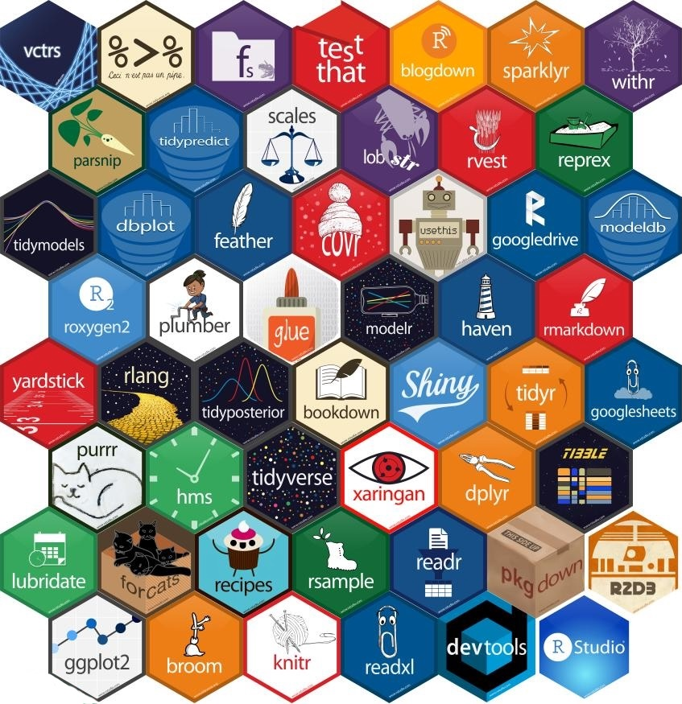

# A tibble: 1 × 3
DBH_cv ht_cv pol_cv
<dbl> <dbl> <dbl>
1 0.650 0.613 0.243
Iteration
Grayson White
Math 241
Week 10 | Spring 2026
Annoucements
Welcome to the visitors!
Peer / Self Feedback due tomorrow!
- I also extended the deadline for the data scientist statement until tomorrow.
Problem Set 5 released tomorrow.
Week 10 Goals
Monday Lecture:
- Iteration
for()andwhile()loops- Functional programming
Wednesday Lecture:
- Parallelism
- Ethics
- AI
Reducing Code Duplication
Last time, we reduced code duplication by creating functions:
Reducing Code Duplication
Last time, we reduced code duplication by creating functions:
coef_of_var <- function(x, na.rm = FALSE, trim = 0) {
stopifnot(is.numeric(x))
sd(x, na.rm = na.rm) / mean(x, na.rm = na.rm, trim = trim)
}
pdxTrees %>%
rename(ht = Tree_Height,
pol = Pollution_Removal_oz) %>%
summarize(DBH_cv = coef_of_var(DBH, na.rm = TRUE),
ht_cv = coef_of_var(ht, na.rm = TRUE),
pol_cv = coef_of_var(pol, na.rm = TRUE))# A tibble: 1 × 3
DBH_cv ht_cv pol_cv
<dbl> <dbl> <dbl>
1 0.650 0.613 0.884- But we still have some code duplication.
Reducing Code Duplication
Can also reduce duplication through iteration.
Iteration: Do the same thing for multiple inputs.
Anonymous Function
- Create a function on the fly to use as an argument of another function.
- Don’t store the anonymous function.
- Also called lambda function/expression.
Anonymous Function
- Create a function on the fly to use as an argument of another function.
- Don’t store the anonymous function.
- Also called lambda function/expression.
Shorthand syntax: ~
Back to dplyr Iterating: “ten, ten, ten for everything(), everything()”
everything()is useful if you want to apply the function to all columns of thedata.frame().
Back to dplyr Iterating: “oh where() is my hairbrush?”
where()is useful for conditional application of the function.
Back to dplyr Iterating
- You can provide more than one function via a
list().
# A tibble: 1 × 6
DBH_cv DBH_mean ht_cv ht_mean pol_cv pol_mean
<dbl> <dbl> <dbl> <dbl> <dbl> <dbl>
1 0.650 20.6 0.613 65.7 0.884 18.1Back to dplyr Iterating: “across() the universe”
across()also works withmutate().
# A tibble: 10 × 34
Longitude Latitude UserID Genus Family DBH Inventory_Date Species
<chr> <chr> <chr> <chr> <chr> <dbl> <dttm> <chr>
1 -122.69364003… 45.5749… 1 Pseu… Pinac… 37.4 2017-05-09 00:00:00 PSME
2 -122.69381044… 45.5748… 2 Pseu… Pinac… 32.5 2017-05-09 00:00:00 PSME
3 -122.69418564… 45.5749… 3 Crat… Rosac… 9.7 2017-05-09 00:00:00 CRLA
4 -122.69394019… 45.5749… 4 Quer… Fagac… 10.3 2017-05-09 00:00:00 QURU
5 -122.69400504… 45.5749… 5 Pseu… Pinac… 33.2 2017-05-09 00:00:00 PSME
6 -122.69433328… 45.5748… 6 Pseu… Pinac… 32.1 2017-05-09 00:00:00 PSME
7 -122.69389891… 45.5749… 7 Pseu… Pinac… 28.4 2017-05-09 00:00:00 PSME
8 -122.69435497… 45.5749… 8 Pseu… Pinac… 27.2 2017-05-09 00:00:00 PSME
9 -122.69371051… 45.5750… 9 Pseu… Pinac… 35.2 2017-05-09 00:00:00 PSME
10 -122.69434988… 45.5749… 10 Pseu… Pinac… 32.4 2017-05-09 00:00:00 PSME
# ℹ 26 more variables: Common_Name <chr>, Condition <chr>, Tree_Height <dbl>,
# Crown_Width_NS <dbl>, Crown_Width_EW <dbl>, Crown_Base_Height <dbl>,
# Collected_By <chr>, Park <chr>, Scientific_Name <chr>,
# Functional_Type <chr>, Mature_Size <fct>, Native <chr>, Edible <chr>,
# Nuisance <chr>, Structural_Value <dbl>, Carbon_Storage_lb <dbl>,
# Carbon_Storage_value <dbl>, Carbon_Sequestration_lb <dbl>,
# Carbon_Sequestration_value <dbl>, Stormwater_ft <dbl>, …Explicit Iterating: for() Loops
Explicit Iterating: for() Loops
Language: Iterating = Looping
# Data
pdxTrees <- get_pdxTrees_parks()
# Variables of interest
vars <- c("DBH", "Tree_Height", "Pollution_Removal_oz")
# Vector for storing output
pdxTrees_coef_of_vars <- rep(NA, 3)
# For loop
for(i in 1:3){
pdxTrees_coef_of_vars[i] <- coef_of_var(pdxTrees[[vars[i]]],
na.rm = TRUE)
}
# Examine output
pdxTrees_coef_of_vars[1] 0.6496634 0.6129159 0.8835582for() Loop Components
- Output: What you want to produce and store.
- Good to specify size of output object.
- Start with
NAs so clear which have been replaced. - Determine if you want to store the output as a vector or data frame or something else.
for() Loop Components
Sequence: The vector you want to iterate over
for() Loop Components
Body: The code that we iterate.
Another example: Building Up a for() Loop
I want to construct a bootstrap distribution for the mean DBH for our sample of Portland trees.
- How is looping/iterating helpful here?
Another example: Building Up a for() Loop
- What do I want to store?
- What type of R object do I want?
- What’s the required size?
Another example: Building Up a for() Loop
How do I save this in boot?
Another example: Building Up a for() Loop
We can also nest loops:
Rows: 1,000
Columns: 3
$ avg_n_20 <dbl> 21.105, 20.330, 20.815, 21.605, 23.870, 21.500, 16.965, 23.5…
$ avg_n_50 <dbl> 19.784, 17.608, 17.988, 12.888, 14.784, 11.650, 14.538, 13.3…
$ avg_n_100 <dbl> 23.912, 20.134, 19.496, 19.383, 18.927, 20.760, 22.355, 21.6…We can also nest loops:
Need an Unknown Number of Iterations
If you want to iterate
whilesome condition is true, then you don’t necessarily know how many iterations are required beforehand.Will then use a
while()loop instead of afor()loop.
- Keeps iterating as long as the condition holds.
while() Loop Example
Want 20 random draws from a normal that are positive numbers
Loops
while()loops aren’t nearly as common asfor()loops.For those who go into statistics research, you will end up often using
for()loops to run simulation studies.
- The internet hates
for()loops in R.- But they usually aren’t as slow as people say.
Function Programming with purrr

Function Programming
Functional Programming: Functions that allow us to pass other functions as arguments
$DBH
[1] 20.61408
$Tree_Height
[1] 65.73607
$Pollution_Removal_oz
[1] 18.09618 DBH Tree_Height Pollution_Removal_oz
20.61408 65.73607 18.09618 map_XXX Functions
Loop over an R object
Do something
Save results
- Function for each type of output:
map()makes a list.map_lgl()makes a logical vector.map_int()makes an integer vector.map_dbl()makes a double vector.map_chr()makes a character vector.map_df()makes a data frame.
map_XXX Functions
- Input: vector
- What did
map_XXX()iterate over?
- What did
map_XXX Functions
- Input: data frame
- What did
map_XXX()iterate over?
- What did
DBH Tree_Height Pollution_Removal_oz
20.61408 65.73607 18.09618 - Lists iterate over its elements.
- Recall: Data.frames are lists. What are their elements?
map_XXX Functions
map_XXX Functions
Rows: 25,534
Columns: 3
$ DBH <fct> 37.4, 32.5, 9.7, 10.3, 33.2, 32.1, 28.4, 27.2, 35.2, 32.4, 3…
$ Condition <fct> Fair, Fair, Fair, Poor, Fair, Fair, Fair, Fair, Fair, Fair, …
$ Native <fct> Yes, Yes, No, No, Yes, Yes, Yes, Yes, Yes, Yes, Yes, No, Yes…map_XXX() using ...
Anonymous Functions
- As we saw, you can also supply anonymous functions to
map_XXX().
Anonymous Functions
n_distinct class
1 4 character
2 3 character
3 185 numeric- What useful information did we lose?
Anonymous Functions
Returning to our Bootstrap Example
Scary list() to Friendly data.frame()
Scary list() to Friendly data.frame()
got_chars: recursive list- Each element is a character in Game of Thrones
- Want to put the
name,culture, andaliveinto adata.frame().
[1] "list"[[1]]
[[1]]$url
[1] "https://www.anapioficeandfire.com/api/characters/1022"
[[1]]$id
[1] 1022
[[1]]$name
[1] "Theon Greyjoy"
[[1]]$gender
[1] "Male"
[[1]]$culture
[1] "Ironborn"
[[1]]$born
[1] "In 278 AC or 279 AC, at Pyke"
[[1]]$died
[1] ""
[[1]]$alive
[1] TRUE
[[1]]$titles
[1] "Prince of Winterfell"
[2] "Lord of the Iron Islands (by law of the green lands)"
[[1]]$aliases
[1] "Prince of Fools" "Theon Turncloak" "Reek" "Theon Kinslayer"
[[1]]$father
[1] ""
[[1]]$mother
[1] ""
[[1]]$spouse
[1] ""
[[1]]$allegiances
[1] "House Greyjoy of Pyke"
[[1]]$books
[1] "A Game of Thrones" "A Storm of Swords" "A Feast for Crows"
[[1]]$povBooks
[1] "A Clash of Kings" "A Dance with Dragons"
[[1]]$tvSeries
[1] "Season 1" "Season 2" "Season 3" "Season 4" "Season 5" "Season 6"
[[1]]$playedBy
[1] "Alfie Allen"
[[2]]
[[2]]$url
[1] "https://www.anapioficeandfire.com/api/characters/1052"
[[2]]$id
[1] 1052
[[2]]$name
[1] "Tyrion Lannister"
[[2]]$gender
[1] "Male"
[[2]]$culture
[1] ""
[[2]]$born
[1] "In 273 AC, at Casterly Rock"
[[2]]$died
[1] ""
[[2]]$alive
[1] TRUE
[[2]]$titles
[1] "Acting Hand of the King (former)" "Master of Coin (former)"
[[2]]$aliases
[1] "The Imp" "Halfman" "The boyman"
[4] "Giant of Lannister" "Lord Tywin's Doom" "Lord Tywin's Bane"
[7] "Yollo" "Hugor Hill" "No-Nose"
[10] "Freak" "Dwarf"
[[2]]$father
[1] ""
[[2]]$mother
[1] ""
[[2]]$spouse
[1] "https://www.anapioficeandfire.com/api/characters/2044"
[[2]]$allegiances
[1] "House Lannister of Casterly Rock"
[[2]]$books
[1] "A Feast for Crows" "The World of Ice and Fire"
[[2]]$povBooks
[1] "A Game of Thrones" "A Clash of Kings" "A Storm of Swords"
[4] "A Dance with Dragons"
[[2]]$tvSeries
[1] "Season 1" "Season 2" "Season 3" "Season 4" "Season 5" "Season 6"
[[2]]$playedBy
[1] "Peter Dinklage"
[[3]]
[[3]]$url
[1] "https://www.anapioficeandfire.com/api/characters/1074"
[[3]]$id
[1] 1074
[[3]]$name
[1] "Victarion Greyjoy"
[[3]]$gender
[1] "Male"
[[3]]$culture
[1] "Ironborn"
[[3]]$born
[1] "In 268 AC or before, at Pyke"
[[3]]$died
[1] ""
[[3]]$alive
[1] TRUE
[[3]]$titles
[1] "Lord Captain of the Iron Fleet" "Master of the Iron Victory"
[[3]]$aliases
[1] "The Iron Captain"
[[3]]$father
[1] ""
[[3]]$mother
[1] ""
[[3]]$spouse
[1] ""
[[3]]$allegiances
[1] "House Greyjoy of Pyke"
[[3]]$books
[1] "A Game of Thrones" "A Clash of Kings" "A Storm of Swords"
[[3]]$povBooks
[1] "A Feast for Crows" "A Dance with Dragons"
[[3]]$tvSeries
[1] ""
[[3]]$playedBy
[1] ""
[[4]]
[[4]]$url
[1] "https://www.anapioficeandfire.com/api/characters/1109"
[[4]]$id
[1] 1109
[[4]]$name
[1] "Will"
[[4]]$gender
[1] "Male"
[[4]]$culture
[1] ""
[[4]]$born
[1] ""
[[4]]$died
[1] "In 297 AC, at Haunted Forest"
[[4]]$alive
[1] FALSE
[[4]]$titles
[1] ""
[[4]]$aliases
[1] ""
[[4]]$father
[1] ""
[[4]]$mother
[1] ""
[[4]]$spouse
[1] ""
[[4]]$allegiances
list()
[[4]]$books
[1] "A Clash of Kings"
[[4]]$povBooks
[1] "A Game of Thrones"
[[4]]$tvSeries
[1] ""
[[4]]$playedBy
[1] "Bronson Webb"
[[5]]
[[5]]$url
[1] "https://www.anapioficeandfire.com/api/characters/1166"
[[5]]$id
[1] 1166
[[5]]$name
[1] "Areo Hotah"
[[5]]$gender
[1] "Male"
[[5]]$culture
[1] "Norvoshi"
[[5]]$born
[1] "In 257 AC or before, at Norvos"
[[5]]$died
[1] ""
[[5]]$alive
[1] TRUE
[[5]]$titles
[1] "Captain of the Guard at Sunspear"
[[5]]$aliases
[1] ""
[[5]]$father
[1] ""
[[5]]$mother
[1] ""
[[5]]$spouse
[1] ""
[[5]]$allegiances
[1] "House Nymeros Martell of Sunspear"
[[5]]$books
[1] "A Game of Thrones" "A Clash of Kings" "A Storm of Swords"
[[5]]$povBooks
[1] "A Feast for Crows" "A Dance with Dragons"
[[5]]$tvSeries
[1] "Season 5" "Season 6"
[[5]]$playedBy
[1] "DeObia Oparei"
[[6]]
[[6]]$url
[1] "https://www.anapioficeandfire.com/api/characters/1267"
[[6]]$id
[1] 1267
[[6]]$name
[1] "Chett"
[[6]]$gender
[1] "Male"
[[6]]$culture
[1] ""
[[6]]$born
[1] "At Hag's Mire"
[[6]]$died
[1] "In 299 AC, at Fist of the First Men"
[[6]]$alive
[1] FALSE
[[6]]$titles
[1] ""
[[6]]$aliases
[1] ""
[[6]]$father
[1] ""
[[6]]$mother
[1] ""
[[6]]$spouse
[1] ""
[[6]]$allegiances
list()
[[6]]$books
[1] "A Game of Thrones" "A Clash of Kings"
[[6]]$povBooks
[1] "A Storm of Swords"
[[6]]$tvSeries
[1] ""
[[6]]$playedBy
[1] ""
[[7]]
[[7]]$url
[1] "https://www.anapioficeandfire.com/api/characters/1295"
[[7]]$id
[1] 1295
[[7]]$name
[1] "Cressen"
[[7]]$gender
[1] "Male"
[[7]]$culture
[1] ""
[[7]]$born
[1] "In 219 AC or 220 AC"
[[7]]$died
[1] "In 299 AC, at Dragonstone"
[[7]]$alive
[1] FALSE
[[7]]$titles
[1] "Maester"
[[7]]$aliases
[1] ""
[[7]]$father
[1] ""
[[7]]$mother
[1] ""
[[7]]$spouse
[1] ""
[[7]]$allegiances
list()
[[7]]$books
[1] "A Storm of Swords" "A Feast for Crows"
[[7]]$povBooks
[1] "A Clash of Kings"
[[7]]$tvSeries
[1] "Season 2"
[[7]]$playedBy
[1] "Oliver Ford"
[[8]]
[[8]]$url
[1] "https://www.anapioficeandfire.com/api/characters/130"
[[8]]$id
[1] 130
[[8]]$name
[1] "Arianne Martell"
[[8]]$gender
[1] "Female"
[[8]]$culture
[1] "Dornish"
[[8]]$born
[1] "In 276 AC, at Sunspear"
[[8]]$died
[1] ""
[[8]]$alive
[1] TRUE
[[8]]$titles
[1] "Princess of Dorne"
[[8]]$aliases
[1] ""
[[8]]$father
[1] ""
[[8]]$mother
[1] ""
[[8]]$spouse
[1] ""
[[8]]$allegiances
[1] "House Nymeros Martell of Sunspear"
[[8]]$books
[1] "A Game of Thrones" "A Clash of Kings" "A Storm of Swords"
[4] "A Dance with Dragons"
[[8]]$povBooks
[1] "A Feast for Crows"
[[8]]$tvSeries
[1] ""
[[8]]$playedBy
[1] ""
[[9]]
[[9]]$url
[1] "https://www.anapioficeandfire.com/api/characters/1303"
[[9]]$id
[1] 1303
[[9]]$name
[1] "Daenerys Targaryen"
[[9]]$gender
[1] "Female"
[[9]]$culture
[1] "Valyrian"
[[9]]$born
[1] "In 284 AC, at Dragonstone"
[[9]]$died
[1] ""
[[9]]$alive
[1] TRUE
[[9]]$titles
[1] "Queen of the Andals and the Rhoynar and the First Men, Lord of the Seven Kingdoms"
[2] "Khaleesi of the Great Grass Sea"
[3] "Breaker of Shackles/Chains"
[4] "Queen of Meereen"
[5] "Princess of Dragonstone"
[[9]]$aliases
[1] "Dany" "Daenerys Stormborn"
[3] "The Unburnt" "Mother of Dragons"
[5] "Mother" "Mhysa"
[7] "The Silver Queen" "Silver Lady"
[9] "Dragonmother" "The Dragon Queen"
[11] "The Mad King's daughter"
[[9]]$father
[1] ""
[[9]]$mother
[1] ""
[[9]]$spouse
[1] "https://www.anapioficeandfire.com/api/characters/1346"
[[9]]$allegiances
[1] "House Targaryen of King's Landing"
[[9]]$books
[1] "A Feast for Crows"
[[9]]$povBooks
[1] "A Game of Thrones" "A Clash of Kings" "A Storm of Swords"
[4] "A Dance with Dragons"
[[9]]$tvSeries
[1] "Season 1" "Season 2" "Season 3" "Season 4" "Season 5" "Season 6"
[[9]]$playedBy
[1] "Emilia Clarke"
[[10]]
[[10]]$url
[1] "https://www.anapioficeandfire.com/api/characters/1319"
[[10]]$id
[1] 1319
[[10]]$name
[1] "Davos Seaworth"
[[10]]$gender
[1] "Male"
[[10]]$culture
[1] "Westeros"
[[10]]$born
[1] "In 260 AC or before, at King's Landing"
[[10]]$died
[1] ""
[[10]]$alive
[1] TRUE
[[10]]$titles
[1] "Ser" "Lord of the Rainwood"
[3] "Admiral of the Narrow Sea" "Hand of the King"
[[10]]$aliases
[1] "Onion Knight" "Davos Shorthand" "Ser Onions" "Onion Lord"
[5] "Smuggler"
[[10]]$father
[1] ""
[[10]]$mother
[1] ""
[[10]]$spouse
[1] "https://www.anapioficeandfire.com/api/characters/1676"
[[10]]$allegiances
[1] "House Baratheon of Dragonstone" "House Seaworth of Cape Wrath"
[[10]]$books
[1] "A Feast for Crows"
[[10]]$povBooks
[1] "A Clash of Kings" "A Storm of Swords" "A Dance with Dragons"
[[10]]$tvSeries
[1] "Season 2" "Season 3" "Season 4" "Season 5" "Season 6"
[[10]]$playedBy
[1] "Liam Cunningham"
[[11]]
[[11]]$url
[1] "https://www.anapioficeandfire.com/api/characters/148"
[[11]]$id
[1] 148
[[11]]$name
[1] "Arya Stark"
[[11]]$gender
[1] "Female"
[[11]]$culture
[1] "Northmen"
[[11]]$born
[1] "In 289 AC, at Winterfell"
[[11]]$died
[1] ""
[[11]]$alive
[1] TRUE
[[11]]$titles
[1] "Princess"
[[11]]$aliases
[1] "Arya Horseface" "Arya Underfoot" "Arry"
[4] "Lumpyface" "Lumpyhead" "Stickboy"
[7] "Weasel" "Nymeria" "Squan"
[10] "Saltb" "Cat of the Canaly" "Bets"
[13] "The Blind Girh" "The Ugly Little Girl" "Mercedenl"
[16] "Mercye"
[[11]]$father
[1] ""
[[11]]$mother
[1] ""
[[11]]$spouse
[1] ""
[[11]]$allegiances
[1] "House Stark of Winterfell"
[[11]]$books
list()
[[11]]$povBooks
[1] "A Game of Thrones" "A Clash of Kings" "A Storm of Swords"
[4] "A Feast for Crows" "A Dance with Dragons"
[[11]]$tvSeries
[1] "Season 1" "Season 2" "Season 3" "Season 4" "Season 5" "Season 6"
[[11]]$playedBy
[1] "Maisie Williams"
[[12]]
[[12]]$url
[1] "https://www.anapioficeandfire.com/api/characters/149"
[[12]]$id
[1] 149
[[12]]$name
[1] "Arys Oakheart"
[[12]]$gender
[1] "Male"
[[12]]$culture
[1] "Reach"
[[12]]$born
[1] "At Old Oak"
[[12]]$died
[1] "In 300 AC, at the Greenblood"
[[12]]$alive
[1] FALSE
[[12]]$titles
[1] "Ser"
[[12]]$aliases
[1] ""
[[12]]$father
[1] ""
[[12]]$mother
[1] ""
[[12]]$spouse
[1] ""
[[12]]$allegiances
[1] "House Oakheart of Old Oak"
[[12]]$books
[1] "A Game of Thrones" "A Clash of Kings" "A Storm of Swords"
[4] "A Dance with Dragons"
[[12]]$povBooks
[1] "A Feast for Crows"
[[12]]$tvSeries
[1] ""
[[12]]$playedBy
[1] ""
[[13]]
[[13]]$url
[1] "https://www.anapioficeandfire.com/api/characters/150"
[[13]]$id
[1] 150
[[13]]$name
[1] "Asha Greyjoy"
[[13]]$gender
[1] "Female"
[[13]]$culture
[1] "Ironborn"
[[13]]$born
[1] "In 275 AC or 276 AC, at Pyke"
[[13]]$died
[1] ""
[[13]]$alive
[1] TRUE
[[13]]$titles
[1] "Princess" "Captain of the Black Wind"
[3] "Conqueror of Deepwood Motte"
[[13]]$aliases
[1] "Esgred" "The Kraken's Daughter"
[[13]]$father
[1] ""
[[13]]$mother
[1] ""
[[13]]$spouse
[1] "https://www.anapioficeandfire.com/api/characters/1372"
[[13]]$allegiances
[1] "House Greyjoy of Pyke" "House Ironmaker"
[[13]]$books
[1] "A Game of Thrones" "A Clash of Kings"
[[13]]$povBooks
[1] "A Feast for Crows" "A Dance with Dragons"
[[13]]$tvSeries
[1] "Season 2" "Season 3" "Season 4"
[[13]]$playedBy
[1] "Gemma Whelan"
[[14]]
[[14]]$url
[1] "https://www.anapioficeandfire.com/api/characters/168"
[[14]]$id
[1] 168
[[14]]$name
[1] "Barristan Selmy"
[[14]]$gender
[1] "Male"
[[14]]$culture
[1] "Westeros"
[[14]]$born
[1] "In 237 AC"
[[14]]$died
[1] ""
[[14]]$alive
[1] TRUE
[[14]]$titles
[1] "Ser" "Hand of the Queen"
[[14]]$aliases
[1] "Barristan the Bold" "Arstan Whitebeard" "Ser Grandfather"
[4] "Barristan the Old" "Old Ser"
[[14]]$father
[1] ""
[[14]]$mother
[1] ""
[[14]]$spouse
[1] ""
[[14]]$allegiances
[1] "House Selmy of Harvest Hall" "House Targaryen of King's Landing"
[[14]]$books
[1] "A Game of Thrones" "A Clash of Kings"
[3] "A Storm of Swords" "A Feast for Crows"
[5] "The World of Ice and Fire"
[[14]]$povBooks
[1] "A Dance with Dragons"
[[14]]$tvSeries
[1] "Season 1" "Season 3" "Season 4" "Season 5"
[[14]]$playedBy
[1] "Ian McElhinney"
[[15]]
[[15]]$url
[1] "https://www.anapioficeandfire.com/api/characters/2066"
[[15]]$id
[1] 2066
[[15]]$name
[1] "Varamyr"
[[15]]$gender
[1] "Male"
[[15]]$culture
[1] "Free Folk"
[[15]]$born
[1] "At a village Beyond the Wall"
[[15]]$died
[1] "In 300 AC, at a village Beyond the Wall"
[[15]]$alive
[1] FALSE
[[15]]$titles
[1] ""
[[15]]$aliases
[1] "Varamyr Sixskins" "Haggon" "Lump"
[[15]]$father
[1] ""
[[15]]$mother
[1] ""
[[15]]$spouse
[1] ""
[[15]]$allegiances
list()
[[15]]$books
[1] "A Storm of Swords"
[[15]]$povBooks
[1] "A Dance with Dragons"
[[15]]$tvSeries
[1] ""
[[15]]$playedBy
[1] ""
[[16]]
[[16]]$url
[1] "https://www.anapioficeandfire.com/api/characters/208"
[[16]]$id
[1] 208
[[16]]$name
[1] "Brandon Stark"
[[16]]$gender
[1] "Male"
[[16]]$culture
[1] "Northmen"
[[16]]$born
[1] "In 290 AC, at Winterfell"
[[16]]$died
[1] ""
[[16]]$alive
[1] TRUE
[[16]]$titles
[1] "Prince of Winterfell"
[[16]]$aliases
[1] "Bran" "Bran the Broken" "The Winged Wolf"
[[16]]$father
[1] ""
[[16]]$mother
[1] ""
[[16]]$spouse
[1] ""
[[16]]$allegiances
[1] "House Stark of Winterfell"
[[16]]$books
[1] "A Feast for Crows"
[[16]]$povBooks
[1] "A Game of Thrones" "A Clash of Kings" "A Storm of Swords"
[4] "A Dance with Dragons"
[[16]]$tvSeries
[1] "Season 1" "Season 2" "Season 3" "Season 4" "Season 6"
[[16]]$playedBy
[1] "Isaac Hempstead-Wright"
[[17]]
[[17]]$url
[1] "https://www.anapioficeandfire.com/api/characters/216"
[[17]]$id
[1] 216
[[17]]$name
[1] "Brienne of Tarth"
[[17]]$gender
[1] "Female"
[[17]]$culture
[1] ""
[[17]]$born
[1] "In 280 AC"
[[17]]$died
[1] ""
[[17]]$alive
[1] TRUE
[[17]]$titles
[1] ""
[[17]]$aliases
[1] "The Maid of Tarth" "Brienne the Beauty" "Brienne the Blue"
[[17]]$father
[1] ""
[[17]]$mother
[1] ""
[[17]]$spouse
[1] ""
[[17]]$allegiances
[1] "House Baratheon of Storm's End" "House Stark of Winterfell"
[3] "House Tarth of Evenfall Hall"
[[17]]$books
[1] "A Clash of Kings" "A Storm of Swords" "A Dance with Dragons"
[[17]]$povBooks
[1] "A Feast for Crows"
[[17]]$tvSeries
[1] "Season 2" "Season 3" "Season 4" "Season 5" "Season 6"
[[17]]$playedBy
[1] "Gwendoline Christie"
[[18]]
[[18]]$url
[1] "https://www.anapioficeandfire.com/api/characters/232"
[[18]]$id
[1] 232
[[18]]$name
[1] "Catelyn Stark"
[[18]]$gender
[1] "Female"
[[18]]$culture
[1] "Rivermen"
[[18]]$born
[1] "In 264 AC, at Riverrun"
[[18]]$died
[1] "In 299 AC, at the Twins"
[[18]]$alive
[1] FALSE
[[18]]$titles
[1] "Lady of Winterfell"
[[18]]$aliases
[1] "Catelyn Tully" "Lady Stoneheart" "The Silent Sistet"
[4] "Mother Mercilesr" "The Hangwomans"
[[18]]$father
[1] ""
[[18]]$mother
[1] ""
[[18]]$spouse
[1] "https://www.anapioficeandfire.com/api/characters/339"
[[18]]$allegiances
[1] "House Stark of Winterfell" "House Tully of Riverrun"
[[18]]$books
[1] "A Feast for Crows" "A Dance with Dragons"
[[18]]$povBooks
[1] "A Game of Thrones" "A Clash of Kings" "A Storm of Swords"
[[18]]$tvSeries
[1] "Season 1" "Season 2" "Season 3"
[[18]]$playedBy
[1] "Michelle Fairley"
[[19]]
[[19]]$url
[1] "https://www.anapioficeandfire.com/api/characters/238"
[[19]]$id
[1] 238
[[19]]$name
[1] "Cersei Lannister"
[[19]]$gender
[1] "Female"
[[19]]$culture
[1] "Westerman"
[[19]]$born
[1] "In 266 AC, at Casterly Rock"
[[19]]$died
[1] ""
[[19]]$alive
[1] TRUE
[[19]]$titles
[1] "Light of the West" "Queen Dowager" "Protector of the Realm"
[4] "Lady of Casterly Rock" "Queen Regent"
[[19]]$aliases
[1] ""
[[19]]$father
[1] ""
[[19]]$mother
[1] ""
[[19]]$spouse
[1] "https://www.anapioficeandfire.com/api/characters/901"
[[19]]$allegiances
[1] "House Lannister of Casterly Rock"
[[19]]$books
[1] "A Game of Thrones" "A Clash of Kings" "A Storm of Swords"
[[19]]$povBooks
[1] "A Feast for Crows" "A Dance with Dragons"
[[19]]$tvSeries
[1] "Season 1" "Season 2" "Season 3" "Season 4" "Season 5" "Season 6"
[[19]]$playedBy
[1] "Lena Headey"
[[20]]
[[20]]$url
[1] "https://www.anapioficeandfire.com/api/characters/339"
[[20]]$id
[1] 339
[[20]]$name
[1] "Eddard Stark"
[[20]]$gender
[1] "Male"
[[20]]$culture
[1] "Northmen"
[[20]]$born
[1] "In 263 AC, at Winterfell"
[[20]]$died
[1] "In 299 AC, at Great Sept of Baelor in King's Landing"
[[20]]$alive
[1] FALSE
[[20]]$titles
[1] "Lord of Winterfell" "Warden of the North" "Hand of the King"
[4] "Protector of the Realm" "Regent"
[[20]]$aliases
[1] "Ned" "The Ned" "The Quiet Wolf"
[[20]]$father
[1] ""
[[20]]$mother
[1] ""
[[20]]$spouse
[1] "https://www.anapioficeandfire.com/api/characters/232"
[[20]]$allegiances
[1] "House Stark of Winterfell"
[[20]]$books
[1] "A Clash of Kings" "A Storm of Swords"
[3] "A Feast for Crows" "A Dance with Dragons"
[5] "The World of Ice and Fire"
[[20]]$povBooks
[1] "A Game of Thrones"
[[20]]$tvSeries
[1] "Season 1" "Season 6"
[[20]]$playedBy
[1] "Sean Bean" "Sebastian Croft" "Robert Aramayo"
[[21]]
[[21]]$url
[1] "https://www.anapioficeandfire.com/api/characters/529"
[[21]]$id
[1] 529
[[21]]$name
[1] "Jaime Lannister"
[[21]]$gender
[1] "Male"
[[21]]$culture
[1] "Westerlands"
[[21]]$born
[1] "In 266 AC, at Casterly Rock"
[[21]]$died
[1] ""
[[21]]$alive
[1] TRUE
[[21]]$titles
[1] "Ser" "Lord Commander of the Kingsguard"
[3] "Warden of the East (formerly)"
[[21]]$aliases
[1] "The Kingslayer" "The Lion of Lannister" "The Young Lion"
[4] "Cripple"
[[21]]$father
[1] ""
[[21]]$mother
[1] ""
[[21]]$spouse
[1] ""
[[21]]$allegiances
[1] "House Lannister of Casterly Rock"
[[21]]$books
[1] "A Game of Thrones" "A Clash of Kings"
[[21]]$povBooks
[1] "A Storm of Swords" "A Feast for Crows" "A Dance with Dragons"
[[21]]$tvSeries
[1] "Season 1" "Season 2" "Season 3" "Season 4" "Season 5"
[[21]]$playedBy
[1] "Nikolaj Coster-Waldau"
[[22]]
[[22]]$url
[1] "https://www.anapioficeandfire.com/api/characters/576"
[[22]]$id
[1] 576
[[22]]$name
[1] "Jon Connington"
[[22]]$gender
[1] "Male"
[[22]]$culture
[1] "Stormlands"
[[22]]$born
[1] "In or between 263 AC and 265 AC"
[[22]]$died
[1] ""
[[22]]$alive
[1] TRUE
[[22]]$titles
[1] "Lord of Griffin's Roost" "Hand of the King"
[3] "Hand of the True King"
[[22]]$aliases
[1] "Griffthe Mad King's Hand"
[[22]]$father
[1] ""
[[22]]$mother
[1] ""
[[22]]$spouse
[1] ""
[[22]]$allegiances
[1] "House Connington of Griffin's Roost" "House Targaryen of King's Landing"
[[22]]$books
[1] "A Storm of Swords" "A Feast for Crows"
[3] "The World of Ice and Fire"
[[22]]$povBooks
[1] "A Dance with Dragons"
[[22]]$tvSeries
[1] ""
[[22]]$playedBy
[1] ""
[[23]]
[[23]]$url
[1] "https://www.anapioficeandfire.com/api/characters/583"
[[23]]$id
[1] 583
[[23]]$name
[1] "Jon Snow"
[[23]]$gender
[1] "Male"
[[23]]$culture
[1] "Northmen"
[[23]]$born
[1] "In 283 AC"
[[23]]$died
[1] ""
[[23]]$alive
[1] TRUE
[[23]]$titles
[1] "Lord Commander of the Night's Watch"
[[23]]$aliases
[1] "Lord Snow"
[2] "Ned Stark's Bastard"
[3] "The Snow of Winterfell"
[4] "The Crow-Come-Over"
[5] "The 998th Lord Commander of the Night's Watch"
[6] "The Bastard of Winterfell"
[7] "The Black Bastard of the Wall"
[8] "Lord Crow"
[[23]]$father
[1] ""
[[23]]$mother
[1] ""
[[23]]$spouse
[1] ""
[[23]]$allegiances
[1] "House Stark of Winterfell"
[[23]]$books
[1] "A Feast for Crows"
[[23]]$povBooks
[1] "A Game of Thrones" "A Clash of Kings" "A Storm of Swords"
[4] "A Dance with Dragons"
[[23]]$tvSeries
[1] "Season 1" "Season 2" "Season 3" "Season 4" "Season 5" "Season 6"
[[23]]$playedBy
[1] "Kit Harington"
[[24]]
[[24]]$url
[1] "https://www.anapioficeandfire.com/api/characters/60"
[[24]]$id
[1] 60
[[24]]$name
[1] "Aeron Greyjoy"
[[24]]$gender
[1] "Male"
[[24]]$culture
[1] "Ironborn"
[[24]]$born
[1] "In or between 269 AC and 273 AC, at Pyke"
[[24]]$died
[1] ""
[[24]]$alive
[1] TRUE
[[24]]$titles
[1] "Priest of the Drowned God"
[2] "Captain of the Golden Storm (formerly)"
[[24]]$aliases
[1] "The Damphair" "Aeron Damphair"
[[24]]$father
[1] ""
[[24]]$mother
[1] ""
[[24]]$spouse
[1] ""
[[24]]$allegiances
[1] "House Greyjoy of Pyke"
[[24]]$books
[1] "A Game of Thrones" "A Clash of Kings" "A Storm of Swords"
[4] "A Dance with Dragons"
[[24]]$povBooks
[1] "A Feast for Crows"
[[24]]$tvSeries
[1] "Season 6"
[[24]]$playedBy
[1] "Michael Feast"
[[25]]
[[25]]$url
[1] "https://www.anapioficeandfire.com/api/characters/605"
[[25]]$id
[1] 605
[[25]]$name
[1] "Kevan Lannister"
[[25]]$gender
[1] "Male"
[[25]]$culture
[1] ""
[[25]]$born
[1] "In 244 AC"
[[25]]$died
[1] "In 300 AC, at King's Landing"
[[25]]$alive
[1] FALSE
[[25]]$titles
[1] "Ser" "Master of laws" "Lord Regent"
[4] "Protector of the Realm"
[[25]]$aliases
[1] ""
[[25]]$father
[1] ""
[[25]]$mother
[1] ""
[[25]]$spouse
[1] "https://www.anapioficeandfire.com/api/characters/327"
[[25]]$allegiances
[1] "House Lannister of Casterly Rock"
[[25]]$books
[1] "A Game of Thrones" "A Clash of Kings" "A Storm of Swords"
[4] "A Feast for Crows"
[[25]]$povBooks
[1] "A Dance with Dragons"
[[25]]$tvSeries
[1] "Season 1" "Season 2" "Season 5" "Season 6"
[[25]]$playedBy
[1] "Ian Gelder"
[[26]]
[[26]]$url
[1] "https://www.anapioficeandfire.com/api/characters/743"
[[26]]$id
[1] 743
[[26]]$name
[1] "Melisandre"
[[26]]$gender
[1] "Female"
[[26]]$culture
[1] "Asshai"
[[26]]$born
[1] "At Unknown"
[[26]]$died
[1] ""
[[26]]$alive
[1] TRUE
[[26]]$titles
[1] ""
[[26]]$aliases
[1] "The Red Priestess" "The Red Woman" "The King's Red Shadow"
[4] "Lady Red" "Lot Seven"
[[26]]$father
[1] ""
[[26]]$mother
[1] ""
[[26]]$spouse
[1] ""
[[26]]$allegiances
list()
[[26]]$books
[1] "A Clash of Kings" "A Storm of Swords" "A Feast for Crows"
[[26]]$povBooks
[1] "A Dance with Dragons"
[[26]]$tvSeries
[1] "Season 2" "Season 3" "Season 4" "Season 5" "Season 6"
[[26]]$playedBy
[1] "Carice van Houten"
[[27]]
[[27]]$url
[1] "https://www.anapioficeandfire.com/api/characters/751"
[[27]]$id
[1] 751
[[27]]$name
[1] "Merrett Frey"
[[27]]$gender
[1] "Male"
[[27]]$culture
[1] "Rivermen"
[[27]]$born
[1] "In 262 AC"
[[27]]$died
[1] "In 300 AC, at Near Oldstones"
[[27]]$alive
[1] FALSE
[[27]]$titles
[1] ""
[[27]]$aliases
[1] "Merrett Muttonhead"
[[27]]$father
[1] ""
[[27]]$mother
[1] ""
[[27]]$spouse
[1] "https://www.anapioficeandfire.com/api/characters/712"
[[27]]$allegiances
[1] "House Frey of the Crossing"
[[27]]$books
[1] "A Game of Thrones" "A Clash of Kings" "A Feast for Crows"
[4] "A Dance with Dragons"
[[27]]$povBooks
[1] "A Storm of Swords"
[[27]]$tvSeries
[1] ""
[[27]]$playedBy
[1] ""
[[28]]
[[28]]$url
[1] "https://www.anapioficeandfire.com/api/characters/844"
[[28]]$id
[1] 844
[[28]]$name
[1] "Quentyn Martell"
[[28]]$gender
[1] "Male"
[[28]]$culture
[1] "Dornish"
[[28]]$born
[1] "In 281 AC, at Sunspear, Dorne"
[[28]]$died
[1] "In 300 AC, at Meereen"
[[28]]$alive
[1] FALSE
[[28]]$titles
[1] "Prince"
[[28]]$aliases
[1] "Frog" "Prince Frog"
[3] "The prince who came too late" "The Dragonrider"
[[28]]$father
[1] ""
[[28]]$mother
[1] ""
[[28]]$spouse
[1] ""
[[28]]$allegiances
[1] "House Nymeros Martell of Sunspear"
[[28]]$books
[1] "A Game of Thrones" "A Clash of Kings" "A Storm of Swords"
[4] "A Feast for Crows"
[[28]]$povBooks
[1] "A Dance with Dragons"
[[28]]$tvSeries
[1] ""
[[28]]$playedBy
[1] ""
[[29]]
[[29]]$url
[1] "https://www.anapioficeandfire.com/api/characters/954"
[[29]]$id
[1] 954
[[29]]$name
[1] "Samwell Tarly"
[[29]]$gender
[1] "Male"
[[29]]$culture
[1] "Andal"
[[29]]$born
[1] "In 283 AC, at Horn Hill"
[[29]]$died
[1] ""
[[29]]$alive
[1] TRUE
[[29]]$titles
[1] ""
[[29]]$aliases
[1] "Sam" "Ser Piggy" "Prince Pork-chop" "Lady Piggy"
[5] "Sam the Slayer" "Black Sam" "Lord of Ham"
[[29]]$father
[1] ""
[[29]]$mother
[1] ""
[[29]]$spouse
[1] ""
[[29]]$allegiances
[1] "House Tarly of Horn Hill"
[[29]]$books
[1] "A Game of Thrones" "A Clash of Kings" "A Dance with Dragons"
[[29]]$povBooks
[1] "A Storm of Swords" "A Feast for Crows"
[[29]]$tvSeries
[1] "Season 1" "Season 2" "Season 3" "Season 4" "Season 5" "Season 6"
[[29]]$playedBy
[1] "John Bradley-West"
[[30]]
[[30]]$url
[1] "https://www.anapioficeandfire.com/api/characters/957"
[[30]]$id
[1] 957
[[30]]$name
[1] "Sansa Stark"
[[30]]$gender
[1] "Female"
[[30]]$culture
[1] "Northmen"
[[30]]$born
[1] "In 286 AC, at Winterfell"
[[30]]$died
[1] ""
[[30]]$alive
[1] TRUE
[[30]]$titles
[1] "Princess"
[[30]]$aliases
[1] "Little bird" "Alayne Stone" "Jonquil"
[[30]]$father
[1] ""
[[30]]$mother
[1] ""
[[30]]$spouse
[1] "https://www.anapioficeandfire.com/api/characters/1052"
[[30]]$allegiances
[1] "House Baelish of Harrenhal" "House Stark of Winterfell"
[[30]]$books
[1] "A Dance with Dragons"
[[30]]$povBooks
[1] "A Game of Thrones" "A Clash of Kings" "A Storm of Swords"
[4] "A Feast for Crows"
[[30]]$tvSeries
[1] "Season 1" "Season 2" "Season 3" "Season 4" "Season 5" "Season 6"
[[30]]$playedBy
[1] "Sophie Turner"Scary list() to Friendly data.frame()
Scary list() to Friendly data.frame()
Explain what the following code does.
How should we generalize this to extract the name, culture, and alive for the first character?
Scary list() to Friendly data.frame()
How should we generalize this to extract the name, culture, and alive for the first character?
Scary list() to Friendly data.frame()
[1] "url" "id" "name" "gender" "culture"
[6] "born" "died" "alive" "titles" "aliases"
[11] "father" "mother" "spouse" "allegiances" "books"
[16] "povBooks" "tvSeries" "playedBy" $name
[1] "Theon Greyjoy"
$culture
[1] "Ironborn"
$alive
[1] TRUE- What do I want to store?
- What type of R object do I want?
- What’s the required size?
Scary list() to Friendly data.frame()
[1] 30 3How should I save the information in got_chars_df?
for() Loop Version
$name
[1] "Theon Greyjoy"$name
[1] "Theon Greyjoy"Scary list() to Friendly data.frame()
Scary list() to Friendly data.frame()
# A tibble: 30 × 3
name culture alive
<chr> <chr> <lgl>
1 Theon Greyjoy "Ironborn" TRUE
2 Tyrion Lannister "" TRUE
3 Victarion Greyjoy "Ironborn" TRUE
4 Will "" FALSE
5 Areo Hotah "Norvoshi" TRUE
6 Chett "" FALSE
7 Cressen "" FALSE
8 Arianne Martell "Dornish" TRUE
9 Daenerys Targaryen "Valyrian" TRUE
10 Davos Seaworth "Westeros" TRUE
# ℹ 20 more rowsNow how can we use purrr to convert the scary list() to friendly data.frame()?
Scary list() to Friendly data.frame()
Let’s start with
name.Translate into words what the following anonymous function is doing.
[[1]]
[1] "Theon Greyjoy"
[[2]]
[1] "Tyrion Lannister"
[[3]]
[1] "Victarion Greyjoy"
[[4]]
[1] "Will"
[[5]]
[1] "Areo Hotah"
[[6]]
[1] "Chett"
[[7]]
[1] "Cressen"
[[8]]
[1] "Arianne Martell"
[[9]]
[1] "Daenerys Targaryen"
[[10]]
[1] "Davos Seaworth"
[[11]]
[1] "Arya Stark"
[[12]]
[1] "Arys Oakheart"
[[13]]
[1] "Asha Greyjoy"
[[14]]
[1] "Barristan Selmy"
[[15]]
[1] "Varamyr"
[[16]]
[1] "Brandon Stark"
[[17]]
[1] "Brienne of Tarth"
[[18]]
[1] "Catelyn Stark"
[[19]]
[1] "Cersei Lannister"
[[20]]
[1] "Eddard Stark"
[[21]]
[1] "Jaime Lannister"
[[22]]
[1] "Jon Connington"
[[23]]
[1] "Jon Snow"
[[24]]
[1] "Aeron Greyjoy"
[[25]]
[1] "Kevan Lannister"
[[26]]
[1] "Melisandre"
[[27]]
[1] "Merrett Frey"
[[28]]
[1] "Quentyn Martell"
[[29]]
[1] "Samwell Tarly"
[[30]]
[1] "Sansa Stark"Scary list() to Friendly data.frame()
Shortcut:
[[1]]
[1] "Theon Greyjoy"
[[2]]
[1] "Tyrion Lannister"
[[3]]
[1] "Victarion Greyjoy"
[[4]]
[1] "Will"
[[5]]
[1] "Areo Hotah"
[[6]]
[1] "Chett"
[[7]]
[1] "Cressen"
[[8]]
[1] "Arianne Martell"
[[9]]
[1] "Daenerys Targaryen"
[[10]]
[1] "Davos Seaworth"
[[11]]
[1] "Arya Stark"
[[12]]
[1] "Arys Oakheart"
[[13]]
[1] "Asha Greyjoy"
[[14]]
[1] "Barristan Selmy"
[[15]]
[1] "Varamyr"
[[16]]
[1] "Brandon Stark"
[[17]]
[1] "Brienne of Tarth"
[[18]]
[1] "Catelyn Stark"
[[19]]
[1] "Cersei Lannister"
[[20]]
[1] "Eddard Stark"
[[21]]
[1] "Jaime Lannister"
[[22]]
[1] "Jon Connington"
[[23]]
[1] "Jon Snow"
[[24]]
[1] "Aeron Greyjoy"
[[25]]
[1] "Kevan Lannister"
[[26]]
[1] "Melisandre"
[[27]]
[1] "Merrett Frey"
[[28]]
[1] "Quentyn Martell"
[[29]]
[1] "Samwell Tarly"
[[30]]
[1] "Sansa Stark"Scary list() to Friendly data.frame()
Another shortcut:
[[1]]
[1] "Theon Greyjoy"
[[2]]
[1] "Tyrion Lannister"
[[3]]
[1] "Victarion Greyjoy"
[[4]]
[1] "Will"
[[5]]
[1] "Areo Hotah"
[[6]]
[1] "Chett"
[[7]]
[1] "Cressen"
[[8]]
[1] "Arianne Martell"
[[9]]
[1] "Daenerys Targaryen"
[[10]]
[1] "Davos Seaworth"
[[11]]
[1] "Arya Stark"
[[12]]
[1] "Arys Oakheart"
[[13]]
[1] "Asha Greyjoy"
[[14]]
[1] "Barristan Selmy"
[[15]]
[1] "Varamyr"
[[16]]
[1] "Brandon Stark"
[[17]]
[1] "Brienne of Tarth"
[[18]]
[1] "Catelyn Stark"
[[19]]
[1] "Cersei Lannister"
[[20]]
[1] "Eddard Stark"
[[21]]
[1] "Jaime Lannister"
[[22]]
[1] "Jon Connington"
[[23]]
[1] "Jon Snow"
[[24]]
[1] "Aeron Greyjoy"
[[25]]
[1] "Kevan Lannister"
[[26]]
[1] "Melisandre"
[[27]]
[1] "Merrett Frey"
[[28]]
[1] "Quentyn Martell"
[[29]]
[1] "Samwell Tarly"
[[30]]
[1] "Sansa Stark"- How do we change this to a vector() output instead of a list() output?
Scary list() to Friendly data.frame()
How do we change this to a vector() output instead of a list() output?
[1] "Theon Greyjoy" "Tyrion Lannister" "Victarion Greyjoy"
[4] "Will" "Areo Hotah" "Chett"
[7] "Cressen" "Arianne Martell" "Daenerys Targaryen"
[10] "Davos Seaworth" "Arya Stark" "Arys Oakheart"
[13] "Asha Greyjoy" "Barristan Selmy" "Varamyr"
[16] "Brandon Stark" "Brienne of Tarth" "Catelyn Stark"
[19] "Cersei Lannister" "Eddard Stark" "Jaime Lannister"
[22] "Jon Connington" "Jon Snow" "Aeron Greyjoy"
[25] "Kevan Lannister" "Melisandre" "Merrett Frey"
[28] "Quentyn Martell" "Samwell Tarly" "Sansa Stark" Scary list() to Friendly data.frame()
Let’s go back to the code that grabs the name, culture, and alive for the first character.
Scary list() to Friendly data.frame()
For all characters, we will use the [ function
[[1]]
[[1]]$name
[1] "Theon Greyjoy"
[[1]]$culture
[1] "Ironborn"
[[1]]$alive
[1] TRUE
[[2]]
[[2]]$name
[1] "Tyrion Lannister"
[[2]]$culture
[1] ""
[[2]]$alive
[1] TRUE
[[3]]
[[3]]$name
[1] "Victarion Greyjoy"
[[3]]$culture
[1] "Ironborn"
[[3]]$alive
[1] TRUE
[[4]]
[[4]]$name
[1] "Will"
[[4]]$culture
[1] ""
[[4]]$alive
[1] FALSE
[[5]]
[[5]]$name
[1] "Areo Hotah"
[[5]]$culture
[1] "Norvoshi"
[[5]]$alive
[1] TRUE
[[6]]
[[6]]$name
[1] "Chett"
[[6]]$culture
[1] ""
[[6]]$alive
[1] FALSE
[[7]]
[[7]]$name
[1] "Cressen"
[[7]]$culture
[1] ""
[[7]]$alive
[1] FALSE
[[8]]
[[8]]$name
[1] "Arianne Martell"
[[8]]$culture
[1] "Dornish"
[[8]]$alive
[1] TRUE
[[9]]
[[9]]$name
[1] "Daenerys Targaryen"
[[9]]$culture
[1] "Valyrian"
[[9]]$alive
[1] TRUE
[[10]]
[[10]]$name
[1] "Davos Seaworth"
[[10]]$culture
[1] "Westeros"
[[10]]$alive
[1] TRUE
[[11]]
[[11]]$name
[1] "Arya Stark"
[[11]]$culture
[1] "Northmen"
[[11]]$alive
[1] TRUE
[[12]]
[[12]]$name
[1] "Arys Oakheart"
[[12]]$culture
[1] "Reach"
[[12]]$alive
[1] FALSE
[[13]]
[[13]]$name
[1] "Asha Greyjoy"
[[13]]$culture
[1] "Ironborn"
[[13]]$alive
[1] TRUE
[[14]]
[[14]]$name
[1] "Barristan Selmy"
[[14]]$culture
[1] "Westeros"
[[14]]$alive
[1] TRUE
[[15]]
[[15]]$name
[1] "Varamyr"
[[15]]$culture
[1] "Free Folk"
[[15]]$alive
[1] FALSE
[[16]]
[[16]]$name
[1] "Brandon Stark"
[[16]]$culture
[1] "Northmen"
[[16]]$alive
[1] TRUE
[[17]]
[[17]]$name
[1] "Brienne of Tarth"
[[17]]$culture
[1] ""
[[17]]$alive
[1] TRUE
[[18]]
[[18]]$name
[1] "Catelyn Stark"
[[18]]$culture
[1] "Rivermen"
[[18]]$alive
[1] FALSE
[[19]]
[[19]]$name
[1] "Cersei Lannister"
[[19]]$culture
[1] "Westerman"
[[19]]$alive
[1] TRUE
[[20]]
[[20]]$name
[1] "Eddard Stark"
[[20]]$culture
[1] "Northmen"
[[20]]$alive
[1] FALSE
[[21]]
[[21]]$name
[1] "Jaime Lannister"
[[21]]$culture
[1] "Westerlands"
[[21]]$alive
[1] TRUE
[[22]]
[[22]]$name
[1] "Jon Connington"
[[22]]$culture
[1] "Stormlands"
[[22]]$alive
[1] TRUE
[[23]]
[[23]]$name
[1] "Jon Snow"
[[23]]$culture
[1] "Northmen"
[[23]]$alive
[1] TRUE
[[24]]
[[24]]$name
[1] "Aeron Greyjoy"
[[24]]$culture
[1] "Ironborn"
[[24]]$alive
[1] TRUE
[[25]]
[[25]]$name
[1] "Kevan Lannister"
[[25]]$culture
[1] ""
[[25]]$alive
[1] FALSE
[[26]]
[[26]]$name
[1] "Melisandre"
[[26]]$culture
[1] "Asshai"
[[26]]$alive
[1] TRUE
[[27]]
[[27]]$name
[1] "Merrett Frey"
[[27]]$culture
[1] "Rivermen"
[[27]]$alive
[1] FALSE
[[28]]
[[28]]$name
[1] "Quentyn Martell"
[[28]]$culture
[1] "Dornish"
[[28]]$alive
[1] FALSE
[[29]]
[[29]]$name
[1] "Samwell Tarly"
[[29]]$culture
[1] "Andal"
[[29]]$alive
[1] TRUE
[[30]]
[[30]]$name
[1] "Sansa Stark"
[[30]]$culture
[1] "Northmen"
[[30]]$alive
[1] TRUEScary list() to Friendly data.frame()
Finally: Let’s make it into a data frame.
# A tibble: 30 × 3
name culture alive
<chr> <chr> <lgl>
1 Theon Greyjoy "Ironborn" TRUE
2 Tyrion Lannister "" TRUE
3 Victarion Greyjoy "Ironborn" TRUE
4 Will "" FALSE
5 Areo Hotah "Norvoshi" TRUE
6 Chett "" FALSE
7 Cressen "" FALSE
8 Arianne Martell "Dornish" TRUE
9 Daenerys Targaryen "Valyrian" TRUE
10 Davos Seaworth "Westeros" TRUE
# ℹ 20 more rowsdfr:rstands for row binding.
Two Routes to the Same End: Pros/Cons?
# A tibble: 30 × 3
name culture alive
<chr> <chr> <lgl>
1 Theon Greyjoy "Ironborn" TRUE
2 Tyrion Lannister "" TRUE
3 Victarion Greyjoy "Ironborn" TRUE
4 Will "" FALSE
5 Areo Hotah "Norvoshi" TRUE
6 Chett "" FALSE
7 Cressen "" FALSE
8 Arianne Martell "Dornish" TRUE
9 Daenerys Targaryen "Valyrian" TRUE
10 Davos Seaworth "Westeros" TRUE
# ℹ 20 more rows# A tibble: 30 × 3
name culture alive
<chr> <chr> <lgl>
1 Theon Greyjoy "Ironborn" TRUE
2 Tyrion Lannister "" TRUE
3 Victarion Greyjoy "Ironborn" TRUE
4 Will "" FALSE
5 Areo Hotah "Norvoshi" TRUE
6 Chett "" FALSE
7 Cressen "" FALSE
8 Arianne Martell "Dornish" TRUE
9 Daenerys Targaryen "Valyrian" TRUE
10 Davos Seaworth "Westeros" TRUE
# ℹ 20 more rows user system elapsed
0.001 0.000 0.001 user system elapsed
0.002 0.000 0.003 Closing Thoughts
“But you should never feel bad about using a for loop instead of a map function. The map functions are a step up a tower of abstraction, and it can take a long time to get your head around how they work. The important thing is that you solve the problem that you’re working on, not write the most concise and elegant code (although that’s definitely something you want to strive towards!).” – Hadley Wickham & Garrett Grolemund